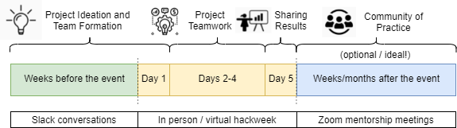

Project Roadmap
Contents
Project Roadmap#
Each project will progress through these stages:
{kind=link}
Project Ideation and Team formation#
Weeks Before the Event#
Ideally the project work begins in advance of the hackweek. As soon as you are accepted to the event we will invite you to Slack where you can begin sharing project ideas:
Have an idea for a project? Pitch it on the hackweek Slack group #project-ideas channel
If you don’t yet have an idea brewing, take time to browse other ideas on Slack. Start up a conversation in a Slack thread if something catches your eye.
Feel free to consult with one of the organizers if you have questions about project purpose, scope, roles and datasets.
You may already have a critical mass forming. This is great! Go ahead and begin defining project roles so that you can arrive at the hackweek ready to get started.
Day 1 of the Event#
We facilitate a project team formation session at the end of the first day of the event.
People with project ideas will make a 1-minute pitch to the group
People looking for a project are invited into small groups to learn more about existing ideas
UW eScience helpers and facilitators are available to help teams get clear on size and scope of the effort
Teamwork#
kick-off meeting focuses on hearing from each team member:
What are your unique learning goals?
How do you work best? What level of group interaction works for you?
What skills and background are you most excited to share with the team?
When are you available to meet?
set up team computing infrastructure on Slack and GitHub (Project Initiallization)
project work begins and teams have regular check-ins to chart progress
project outputs are recorded in a GitHub repository
Presentations#
each team has 15 minutes to share what was learned, what challenges arose, what might be worth trying next
individual contributions to the group effort are recognized and celebrated
Communities of Practice#
We aspire to keep projects going after the hackweek! This is an optional (ideal) outcome of hackweek project work.
Project leads/helpers will transition to longer-term engagement via mentorship role (optional/with support).
Additional people join a growing Community of Practice (for example, centered on a community software library).
software, research results are packaged and shared/published.